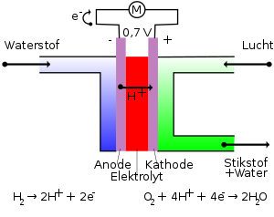

- atomic number:1
- Melting point:−259.16 °C
- Boiling point:−252.879 °C
- Density:0.08988 g/L
- Density when liquid:0.07 g/cm3
- Ionization energies:1312.0 kJ/mol
Applications of H2
Petrochemical industry
Large quantities of H
2 are used in the "upgrading" of fossil fuels. Key consumers of H2 include hydrodealkylation, hydrodesulfurization, and hydrocracking. Many of these reactions can be classified as hydrogenolysis, i.e., the cleavage of bonds to carbon. Illustrative is the separation of sulfur from liquid fossil fuels:
R-S-R + 2 H2 → H2S + 2 RH
Hydrogenation
Hydrogenation, the addition of H2 to various substrates is conducted on a large scale. The hydrogenation of N2 to produce ammonia by the Haber-Bosch Process consumes a few percent of the energy budget in the entire industry. The resulting ammonia is used to supply the majority of the protein consumed by humans. Hydrogenation is used to convert unsaturated fats and oils to saturated fats and oils. The major application is the production of margarine. Methanol is produced by hydrogenation of carbon dioxide. It is similarly the source of hydrogen in the manufacture of hydrochloric acid. H2 is also used as a reducing agent for the conversion of some ores to the metals.
Coolant
Hydrogen is commonly used in power stations as a coolant in generators due to a number of favorable properties that are a direct result of its light diatomic molecules. These include low density, low viscosity, and the highest specific heat and thermal conductivity of all gases.
Energy carrier
Hydrogen is not an energy resource as a combustion fuel because there is no naturally occurring source of hydrogen in useful quantities. The Sun's energy comes from nuclear fusion of hydrogen, but this process is difficult to achieve controllably on Earth. Elemental hydrogen from solar, biological, or electrical sources requires more energy to make than is obtained by burning it, so in these cases hydrogen functions as an energy carrier, like a battery. Hydrogen may be obtained from fossil sources (such as methane), but these sources are unsustainable.

The energy density per unit volume of both liquid hydrogen and compressed hydrogen gas at any practicable pressure is significantly less than that of traditional fuel sources, although the energy density per unit fuel mass is higher. Nevertheless, elemental hydrogen has been widely discussed in the context of energy, as a possible future carrier of energy on an economy-wide scale.For example, CO2 sequestration followed by carbon capture and storage could be conducted at the point of H2 production from fossil fuels. Hydrogen used in transportation would burn relatively cleanly, with some NOx emissions, but without carbon emissions. However, the infrastructure costs associated with full conversion to a hydrogen economy would be substantial. Fuel cells can convert hydrogen and oxygen directly to electricity more efficiently than internal combustion engines.
Semiconductor industry
Hydrogen is employed to saturate broken ("dangling") bonds of amorphous silicon and amorphous carbon that helps stabilizing material properties. It is also a potential electron donor in various oxide materials, including ZnO, SnO2, CdO, MgO, ZrO2, HfO2, La2O3, Y2O3, TiO2, SrTiO3, LaAlO3, SiO2, Al2O3, ZrSiO4, HfSiO4, and SrZrO3.
Rocket propellant
Liquid hydrogen and liquid oxygen together serve as cryogenic fuel in liquid-propellant rockets, as in the Space Shuttle main engines.